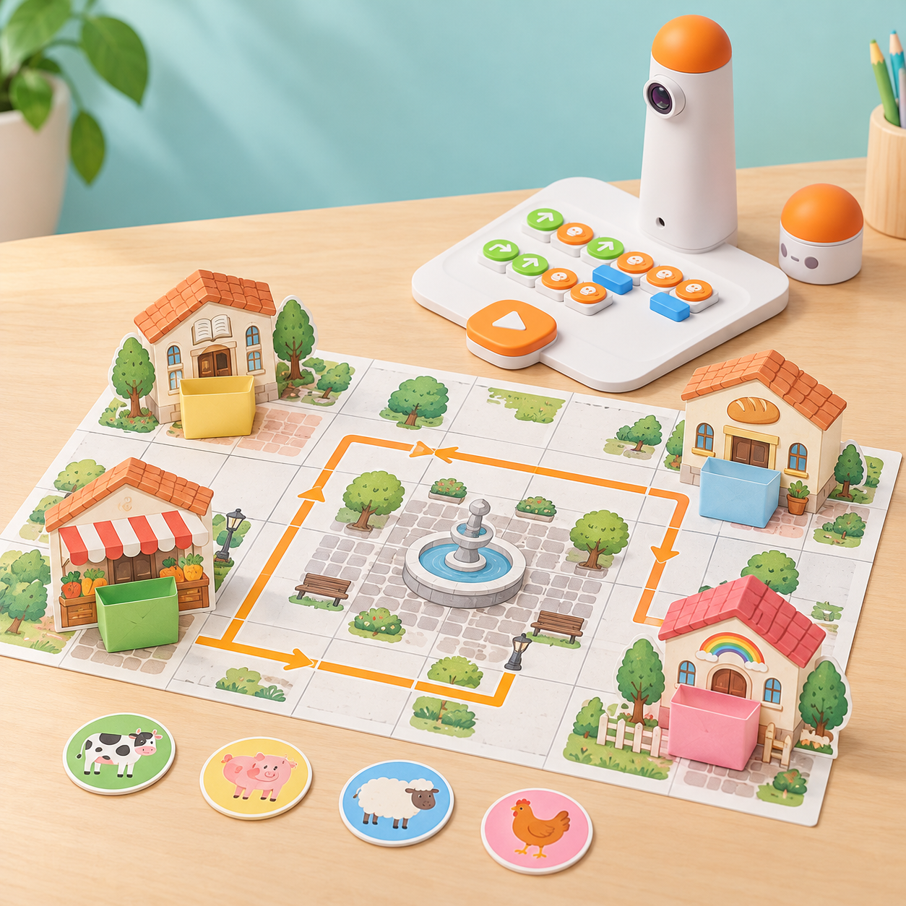
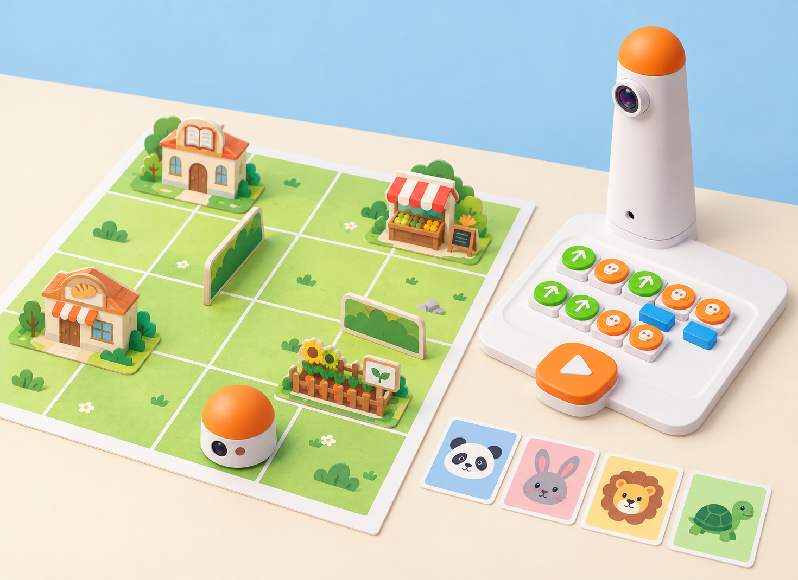
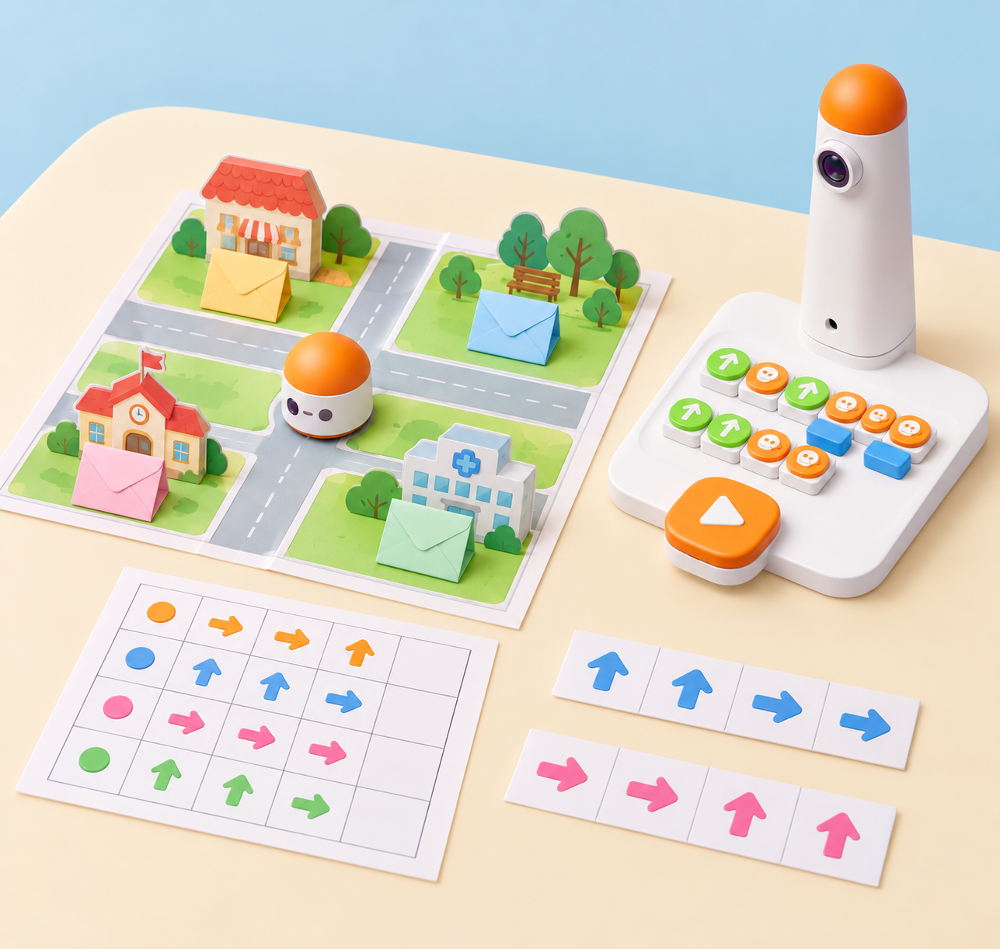

Quatre animals, quatre visites i una ruta de memòria
🏷️ Serveis del poble i animals de granja
🌱 Situació, repte i intenció
Després, les butxaques es tanquen i cal recordar on és cada animal, planificar la ruta de retorn i comprovar-la.
La proposta adapta el pla oficial de Matatalab Deliver Animals: quatre animals de granja viatgen a quatre llocs de la comunitat; cada arribada obri una història sobre la destinació. El pla proposa revisar els blocs de moviment i preparar llocs, animals i obstacles durant 10 minuts; dedicar-ne 30 al lliurament, la narració i, com a ampliació, una sola ruta amb les quatre destinacions; i tancar amb 5 minuts de retorn i preguntes.
Ací es mantenen eixa progressió, el record de les destinacions i la possibilitat de programar el recorregut complet. Els llocs, els materials, les històries i el registre són propis i locals. La col·locació o retirada de cada fitxa la fa una persona: no atribuïm al MatataBot un mecanisme de descàrrega.
🎯 Aprenentatges i vocabulari
- Descompondre un trajecte en ordres de moviment i estimar quantes caselles cal avançar o retrocedir.
- Associar cada fitxa amb una destinació i una història creada pel grup, i recuperar la informació de memòria.
- Construir i llegir una graella amb inici, orientació, quatre llocs i rutes transitables.
- Comparar la predicció amb el recorregut, detectar el primer punt de divergència i corregir una ordre cada vegada.
- Explicar què fa MatataBot i què fan les persones: el robot no veu, recorda ni arreplega les fitxes.
🧰 Materials i preparació
- Coding Set complet: MatataBot, torre, tauler de control i blocs de moviment; carregueu i aparelleu els components segons la guia del model del centre.
- Una graella de paper gran basada en les caselles del tauler o una ruta comprovada amb el robot; manteniu constant la distància entre caselles i marqueu inici i orientació.
- Quatre edificis menuts de cartó amb una butxaca de paper fàcil d’obrir, quatre fitxes grans d’animals i targetes amb biblioteca, mercat, forn i viver. Les fitxes no han de poder entrar en cap peça del robot.
- Full de registre amb columnes animal, lloc visitat, frase-pista, ruta d’anada, ruta de retorn, predicció i resultat; targetes de fletxa i nombre per a planificar abans de tocar els blocs.
Feu una prova prèvia entre les caselles que triareu i comproveu la longitud real del pas, el gir i l’orientació inicial del MatataBot. Si el mapa no coincideix amb la distància del model, ajusteu-ne la quadrícula abans de la classe. Col·loqueu les butxaques al costat de la ruta, sense impedir el moviment ni tapar caselles; la persona adulta administra les fitxes.
📅 Seqüència didàctica
Construïm el poble i provem les rutes (45 min)
Fase 1 · Activem i prediem
Presenteu les quatre fitxes d’animals i els quatre llocs. Pregunteu què podria fer cada animal en una visita i com recordaríem una destinació si després no la poguérem veure. Cada parella dibuixa una ruta fins a dos llocs i estima les ordres abans de muntar-la.
Fase 2 · Explorem i construïm
En equips de quatre, repartiu rols de planificació, programació, observació i registre. Marqueu un punt d’inici i una orientació fixa; construïu la quadrícula i poseu els edificis amb les butxaques fora del pas del robot. Proveu una ruta senzilla amb blocs del kit i ajusteu el mapa fins que la distància entre caselles siga consistent.
Fase 3 · Expliquem i registrem
Llegiu en veu alta una ruta com una seqüència ordenada: inici, ordres, gir i arribada. El grup observador contrasta les ordres amb el mapa i registra quantes caselles separen cada lloc de l’inici; distingiu la coordenada del mapa de les ordres que realment rep el robot.
Fase 4 · Apliquem i millorem
Intercanvieu els mapes entre dos equips. L’equip visitant ha de trobar una ruta fins a un edifici sense que li la dicten. Si la predicció falla, localitzeu la primera ordre que no concorda amb el mapa, canvieu-ne només una i torneu a executar-la.
Fase 5 · Comprovem i reflexionem
Lliurem els animals i inventem pistes (45 min)
Correspondència amb Deliver Animals: reserveu aproximadament 10 minuts per a repassar els blocs i muntar les quatre destinacions amb obstacles; 30 minuts per a programar i narrar els lliuraments; i 5 minuts per a compartir una història i respondre preguntes de comprovació. En aquesta adaptació, el registre i la construcció de pistes s’integren en les cinc fases següents.
Fase 1 · Activem i prediem
Cada membre de l’equip tria una fitxa d’animal i, abans de programar, inventa una frase breu que explique per què visita un lloc. La frase ha de relacionar l’animal i la destinació amb una pista fàcil de recordar; no cal que descriga un fet real sobre l’animal.
Fase 2 · Explorem i construïm
Per torns, planifiqueu amb targetes la ruta des de l’inici fins al lloc triat. Compteu els avanços i els girs, poseu els blocs en l’ordre previst i demaneu a una altra persona que els revise abans de prémer Play. Repetiu el procés per a les quatre fitxes, mantenint el mateix inici i acordant si el robot torna a l’inici entre trajectes.

Fase 3 · Expliquem i registrem
En arribar, l’adult o un alumne amb el rol acordat col·loca manualment l’animal dins de la butxaca. Qui ha creat la frase la diu al grup i l’equip anota animal, lloc, pista i ruta. MatataBot no col·loca ni amaga la fitxa.
Fase 4 · Apliquem i millorem
Compareu dues pistes: quina ajuda més a distingir les quatre destinacions sense dir-ne directament el nom? Reescriviu una frase massa semblant a una altra i comproveu que cada animal queda associat a un únic lloc. En cada nova ronda, canvieu els rols perquè totes les persones planifiquen i programen.
Quan les quatre visites funcionen per separat, encadeneu-les com a ampliació en una única seqüència, tal com suggereix el pla oficial. Si el kit i el mode utilitzat ofereixen un bloc de música predefinida, l’equip pot afegir-lo després d’una arribada; és opcional i no substitueix la comprovació de la ruta. Una persona col·loca manualment cada fitxa en la parada corresponent.
Fase 5 · Comprovem i reflexionem
Recordem i recuperem les fitxes (45 min)
Fase 1 · Activem i prediem
Tanqueu les butxaques i aparteu el registre. Escolteu les quatre frases-pista sense mostrar els llocs; cada alumne relaciona una frase amb una destinació i explica la seua predicció abans de tocar el robot.

Fase 2 · Explorem i construïm
Trieu una destinació i reconstruïu de memòria la ruta d’anada; després planifiqueu com tornar a l’inici amb les ordres disponibles. Dibuixeu les dues seqüències en targetes separades i comproveu-les sobre la quadrícula abans de carregar-les al tauler. Si el programa del model no permet guardar rutes, feu cada trajecte com una execució independent.
Fase 3 · Expliquem i registrem
Executeu el trajecte i arribeu a la butxaca indicada. Abans d’obrir-la, verbalitzeu quin animal espereu trobar i quina frase ho justifica; la persona encarregada obri el model i recupera manualment la fitxa. Anoteu predicció, resultat i nombre d’ordres.
Fase 4 · Apliquem i millorem
Repetiu amb les altres tres destinacions. Quan una ruta no arribe, compareu inici, orientació, comptatge i ordre de gir. Si la destinació és correcta però la fitxa esperada no, reviseu primer la pista i l’associació de memòria; no canvieu el programa per corregir un record equivocat.
Fase 5 · Comprovem i reflexionem
Inventem un repte per a una altra classe (45 min)
Fase 1 · Activem i prediem
Cada equip rep una graella neta i decideix quines quatre destinacions locals usarà. Predigueu quin lloc serà més fàcil de trobar i quina pista podria fer recordar cada animal sense confondre’l amb els altres.
Fase 2 · Explorem i construïm
Dissenyeu quatre butxaques de paper i un recorregut amb interseccions clares. Una parella prepara les rutes d’anada i l’altra comprova que cada animal es pot lliurar i recuperar des de l’inici amb els blocs del kit. Escriviu les quatre històries-pista en targetes separades i numereu-les segons un codi acordat, no segons la solució.
Fase 3 · Expliquem i registrem
Intercanvieu el repte amb una altra parella: expliqueu només les regles, llegiu les pistes i deixeu que l’altre equip deduïsca les destinacions, planifique les rutes i recupere les fitxes. Registreu les preguntes que necessiten aclariment i el primer punt de cada ruta que no coincideix amb el mapa.
Fase 4 · Apliquem i millorem
Reviseu una pista ambigua o una intersecció confusa i torneu a provar el repte. Manteniu les mateixes distàncies i el mateix punt d’inici durant la comparació; no canvieu alhora el mapa, la pista i el programa.
Fase 5 · Comprovem i reflexionem
🧪 Evidències i avaluació
Useu el registre per observar si l’alumnat fixa un inici i una orientació; compta ordres amb coherència; associa les pistes amb les destinacions; formula una predicció abans de revelar la fitxa; i depura per separat errors de record i de ruta. Guardeu el mapa final, les quatre històries, les seqüències d’anada/retorn i una nota d’autoavaluació: «ho he planificat», «ho he pogut recordar» i «he comprovat la ruta». Valoreu l’explicació i la cooperació, no la rapidesa ni la memòria individual sense suports.
♿ Participació, accessibilitat i seguretat
Useu fitxes grans amb forma i dibuix diferenciats, edificis amb relleu i pistes orals, visuals o gestuals. Permeteu consultar una targeta de suport en la primera ronda i retireu-la només si l’alumne vol provar el repte de memòria sense ajuda. Repartiu rols que no obliguen a parlar davant de tot el grup; es pot comunicar una pista assenyalant pictogrames. Manteniu el mapa estable i pla, deixeu una zona lliure al voltant del robot i no poseu peces menudes en la seua trajectòria.
La persona adulta gestiona les fitxes amagades i cap prova consisteix a endevinar dades personals o a exposar records de l’alumnat.
🔗 Referents i adaptació
- Matatalab, Deliver Animals: proposa transportar quatre animals a quatre llocs comunitaris, revisar els blocs de moviment, preparar el mapa i obstacles, narrar cada arribada i provar com a ampliació una ruta que visite els quatre llocs en una execució. La proposta conserva aquesta seqüència i contextualitza les destinacions en un poble valencià.
- Matatalab, cas docent Pick Me Up, Piggy! (U.S. Preschool Case Study): descriu un grup de quatre, quatre animals de granja, quatre llocs de la comunitat (biblioteca, pizzeria, botiga de pintura i dentista), animals amagats en arribar, una història individual per recordar cada destinació i una ronda posterior de recuperació programada. També observa que la quadrícula del tauler facilita estimar quantes ordres de moviment calen. La situació trasllada aquesta experiència a una maqueta local pròpia amb quatre llocs diferents, butxaques de paper, registre de memòria i depuració; la font és un cas docent publicat, no un pla complet d’unitat.
- MatataStudio, guia del Coding Set: consulteu els blocs de moviment i les instruccions de col·locació i execució del model disponible al centre. El robot segueix les ordres; la lectura de pistes, l’ocultació de fitxes i la recuperació són accions humanes.
La il·lustració IA pròpia representa el MatataBot i la torre de la dotació al costat d’una maqueta de paper. Els edificis, les butxaques, les fitxes i la ruta són materials creats per a aquesta proposta, no elements del kit ni capacitats del robot.